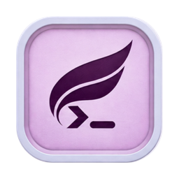

Tabs with a sense of place.
Group tabs by project, add a color, and find the right context in your sidebar.
A little lift for your command line
A native terminal with room for every project. Keep your tabs together, your branches close, and your place when you come back.
macOS 14+ Free & open source

A home for your open threads
From the first shell to the last open tab,
a little less getting in your own way.

Group tabs by project, add a color, and find the right context in your sidebar.
Create, open, and remove Git worktrees without stepping out of the terminal.
Recover recently closed windows, even after restarting. Your next session has a starting point.
Familiar at the core
Ghostty's terminal engine, a Rust frontend, and a workspace that feels like yours. Built for the way you move between projects.
Read the build notesA personal touch
A soft spot for lilac? A thing for blueprints? Find a familiar face for your Dock. More styles are waiting in the app.
Official

Give your terminal wings
Free, open source, and ready for your next project.